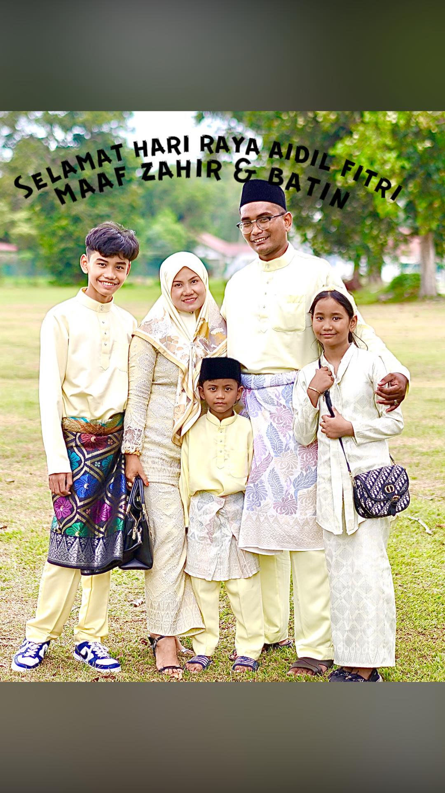

1 / 3
My Family At PantaiChaya Bulan
2 / 3

Raya 2022
3 / 3
Avilion
VIDEO : MY FAMILY

ABAH
ABAH : MOHD ASHARI BIN RUSLAN
Age : 64 Years old( Passed Away on 28/09/2023
Occupation :KAPTEN TUDM (Airforce)
<MAMA
MAMA: RUSNAH BINTI AHMAD
Age : 63 Years old
Occupation :Housewife

ABANG EDDIN
Name: Muhammad Muhidden Bin Mohd Ashari
Age : 38 Years old
Occupation :Businessman
ABANG CACA
Name: Muhammad Nasharuddin Bin Mohd Ashari
Age : 37 Years old
Occupation :Supervisor
ABANG AMIR
Name: Muhammad Amiruddin Bin Mohd Ashari
Age : 33 Years old
Occupation :Freelance Photographer
ABANG IWAN
Name: Muhammad Izuanuddin Bin Mohd Ashari
Age : 21 Years old (passed away on 02/12/2012)
ABANG SHAHRUL
Name: Muhammad Shahruddin Bin Mohd Ashari
Age : 26 Years old
Occupation :Mechanist
ME
Name: Siti Nur Aisyah Binti Mohd Ashari
Age : 24 Years old
Occupation :Student